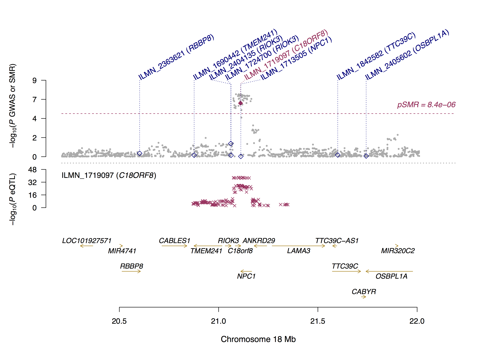
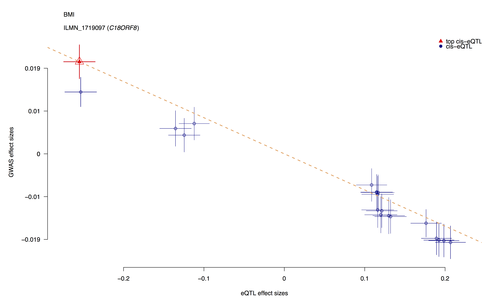

Overview
About
This software tool implements the SMR & HEIDI methods to test for pleiotropic association between the expression level of a gene and a complex trait of interest using summary-level data from GWAS and expression quantitative trait loci (eQTL) studies (Zhu et al. 2016 Nat Genet). The methodology can be interpreted as an analysis to test if the effect size of a SNP on the phenotype is mediated by gene expression. This tool can therefore be used to prioritize genes underlying GWAS hits for follow-up functional studies.
Credits
Zhihong Zhu and Jian Yang developed the methods. Futao Zhang, Zhili Zheng, Zhihong Zhu and Jian Yang designed and developed the software and webpages.
Questions and Help Requests
Bug reports or questions to Jian Yang (jian.yang@uq.edu.au) at Institute for Molecular Bioscience, The University of Queensland.
Citations
Zhihong Zhu, Futao Zhang, Han Hu, Andrew Bakshi, Matthew R. Robinson, Joseph E. Powell, Grant W. Montgomery, Michael E. Goddard, Naomi R. Wray, Peter M. Visscher and Jian Yang (2016) Integration of summary data from GWAS and eQTL studies predicts complex trait gene targets. Nat Genet, 48: 481-487.
Download
Executable Files (version 0.69)
The executable files (binary code) are released under MIT lincense.
eQTL summary data
# Westra eQTL summary data
Westra eQTL summary data (Westra et al. 2013 Nat Genet) in SMR binary (BESD) format:
westra_eqtl_data_hg18.zip (hg18)
westra_eqtl_data_hg19.zip (hg19)
# CAGE eQTL summary data
CAGE eQTL summary data (Luke R. Lloyd-Jones et al. 2017 AJHG) in SMR binary (BESD) format:
cage_eqtl_data_hg19.tgz (hg19)
The CAGE eQTL results have finer coverage than the Westra et al. 2013 results with comparable power. Please note that the EGCUT cohort is common to both the Westra et al. 2013 and CAGE data sets. Please see the above link to the CAGE paper that outlines how these eQTL results were generated.
Please see the associated Shiny App for further interactive interrogation of the results generated in the CAGE analysis.
R script for SMR locus plot
R script and sample file for SMR locus plot:
Update log
1. 24 Aug, 2015: first release.
2. 17 Sept, 2015: updated the format of sparse besd file; added a function to make sparse besd file by extracting information from full dense besd file; added a function to check quickly how many probes are associated with a SNP at p < a threshold(e.g. 5e-8).
3. 12 Oct, 2015: Eigen library and OpenMP were used.
4. Version 0.6 (10 Nov, 2015): added features of SMR and HEIDI test for the trans regions.
5. Version 0.619 (4 Aril, 2016): updated sparse besd format; updated features to make sparse verison of BESD; added features to query eQTL summary results; added features to combine BESD files.
6. Version 0.620 (12 Aril, 2016): added a feature to deal with duplicate IDs.
7. Version 0.628 (11 May, 2016): added a feature to visualize SMR results.
8. Version 0.630 (23 May, 2016): updated features to make binary besd file from plain text file(s).
9. Version 0.631 (23 June, 2016): more options to make BESD files and more memory-efficient when making binary besd files.
10. Version 0.632 (28 June, 2016): added a feature to make a BESD file from BOLT-LMM output format.
11. Version 0.64 (8 August, 2016): updated the .esi file format; updated the HEIDI test (a new method that improves the power of the HEIDI test); updated the SMR query output format; improved the analysis to combine multiple BESD files.
12. Version 0.65 (12 December, 2016): added a flag (--heidi-mtd) for users to choose the original approach or a new approach for HEIDI test.
13. Version 0.66 (10 January, 2017): updated the function to generate the file for locus plot. The new version is able to read a gene list with/without strand information.
14. Version 0.67 (22 June, 2017): updated the functions to make BESD file by the following strategy: 1) Z* from N(0, 1) given the p-value. 2) SE* = b / Z* . 3) store b and SE* in BESD. This adjustment guarantees that the re-computed p-value from b and SE being exact the same as the original p-value, useful for data with small sample size.
15. Version 0.68 (11 August, 2017): updated the SMR and HEIDI tests in the trans regions (the previous version focuses only on the top trans-eQTL locus and the new version will run the tests for all the trans-eQTL loci one at a time).
16. (12 September, 2017): Luke R. Lloyd-Jones et al. released CAGE eQTL summary statistics for SMR analysis.
17. Version 0.69 (7 October, 2017): added features to run multi-SNP based SMR and SMR analysis of two molecular traits. Also add a feature to remove technical eQTLs.
Basic Options
SMR
smr --bfile mydata --gwas-summary mygwas.ma --beqtl-summary myeqtl --out mysmr --thread-num 10 -
--bfile reads individual-level SNP genotype data (in PLINK binary format) from a reference sample for LD estimation, i.e. .bed, .bim, and .fam files.
-
--gwas-summary reads summary-level data from GWAS. The input format follows that for GCTA-COJO analysis ( http://cnsgenomics.com/software/gcta/#Conditionalanalysis).
mygwas.ma
SNP
A1
A2
freq
b
se
p
n
rs1001
A
G
0.8493
0.0024
0.0055
0.6653
129850
rs1002
C
G
0.03606
0.0034
0.0115
0.7659
129799
rs1003
A
C
0.5128
0.045
0.038
0.2319
129830
......
Columns are SNP, the effect (coded) allele, the other allele, frequency of the effect allele, effect size, standard error, p-value and sample size. The headers are not keywords and will be omitted by the program. Important: “A1” needs to be the effect allele with “A2” being the other allele and “freq” needs to be the frequency of “A1”. NOTE:1) For a case-control study, the effect size should be log(odds ratio) with its corresponding standard error.
--beqtl-summary reads summary-level data from a eQTL study in binary format. We store eQTL summary data in three separate files .esi (SNP information, in the same format as the PLINK .bim file), .epi (probe information) and .besd (eQTL summary statistics in binary format). See Data Management for more information. We have prepared the data from the Westra study (Westra et al. 2013 Nat Genet) in this format, which is available for download at Download.
--out saves the results from the SMR analysis in .smr file (text format).
mysmr.smr
ProbeID
Probe_Chr
Gene
Probe_bp
SNP
SNP_Chr
SNP_bp
A1
A2
Freq
b_GWAS
se_GWAS
p_GWAS
b_eQTL
se_eQTL
p_eQTL
b_SMR
se_SMR
p_SMR
p_HEIDI
nsnp_HEIDI
prb01
1
Gene1
1001
rs01
1
1011
C
T
0.95
-0.024
0.0063
1.4e-04
0.36
0.048
6.4e-14
-0.0668
0.0197
6.8e-04
NA
NA
prb02
1
Gene2
2001
rs02
1
2011
G
C
0.0747
0.0034
0.0062
5.8e-01
0.62
0.0396
2e-55
0.0055
0.01
5.8e-01
4.17e-01
28
......
Columns are probe ID, probe chromosome, gene name, probe position, SNP name,SNP chromosome, SNP position, the effect (coded) allele, the other allele, frequency of the effect allele (estimated from the reference samples), effect size from GWAS, SE from GWAS, p-value from GWAS, effect size from eQTL study, SE from eQTL study, p-value from eQTL study, effect size from SMR, SE from SMR, p-value from SMR, p-value from HEIDI (HEterogeneity In Depedent Instruments) test, and number of SNPs used in the HEIDI test.
Missing Value is represented by "NA".
--thread-num specifies the number of OpenMP threads for parallel computing. The default value is 1.
# Specify a method for HEIDI test
smr --bfile mydata --gwas-summary mygwas.ma --beqtl-summary myeqtl --heidi-mtd 0 --out mysmr -
--heidi-mtd specifies a method for HEIDI test. 0 for the original HEIDI test approach as in Zhu et al. (2016 Nature Genetics), and 1 for a new HEIDI test ( beta version for testing). The default value is 1. The new approach uses up to the top 20 SNPs in the cis-eQTL region (including the top cis-eQTL) for heterogeneity test because our latest simulation shows that the power of HEIDI test increases initially but then decreases with increasing number of SNPs (m) with a peak at m = ~20.
# Filter SNPs by MAF (in the reference sample)
smr --bfile mydata --gwas-summary mygwas.ma --beqtl-summary myeqtl --maf 0.01 --out mysmr -
--maf removes SNPs based on a minor allele frequency (MAF) threshold in the reference sample.
# Include or exclude a subset of individuals
smr --bfile mydata --gwas-summary mygwas.ma --beqtl-summary myeqtl --keep myindi.list --out mysmr -
--keep includes a subset of individuals in the reference sample for analysis.
-
--remove excludes a subset of individuals in the reference sample from the analysis.
myindi.list
F001
S001
F002
S002
F003
S001
...
# Include or exclude a subset of eQTL summary data
smr --bfile mydata --gwas-summary mygwas.ma --beqtl-summary myeqtl --extract-snp mysnp.list --extract-probe myprobe.list --out mysmr -
--extract-snp extracts a subset of SNPs for analysis.
-
--exclude-snp excludes a subset of SNPs from analysis.
mysnp.list
rs1001
rs1002
rs1003
...
--extract-probe extracts a subset of probes for analysis.
--exclude-probe excludes a subset of probes from analysis.
myprobe.list
probe1001
probe1002
probe1003
...
# Other parameters
smr --bfile mydata --gwas-summary mygwas.ma --beqtl-summary myeqtl --peqtl-smr 5e-8 --ld-pruning 0.9 --peqtl-heidi 1.57e-3 --heidi-m 3 --cis-wind 2000 --thread-num 5 --out mysmr
-
--peqtl-smr p-value threshold to select the top associated eQTL for the SMR test. The default value is 5.0e-8. By default, we only run the SMR analysis in the cis regions. Please see below for the SMR analysis in trans regions.
-
--peqtl-heidi threshold of eQTL p-value to select eQTLs for the HEIDI test. The default value is 1.57e-3, which is equivalent to a chi-squared value (df=1) of 10.
-
--ld-pruning LD r-squared threshold for pruning SNPs (eQTLs) in HEIDI test, removing SNPs in high LD with the top associated eQTL. The default value is 0.9.
-
--heidi-m minimum requirement of the number of eQTLs used in the HEIDI test. We will skip the HEIDI test if the number of SNPs is smaller than the threshold. This is because if the number of SNPs is too small, HEIDI test has little power to detect heterogeneity and possibly generates misleading result. The default value is 3.
-
--cis-wind defines a window centred around the probe to select cis-eQTLs (passing a p-value threshold) for the SMR analysis. The default value is 2000Kb.
# Specify a target SNP for the SMR and HEIDI tests
By default, we use the top cis-eQTL as a target in the SMR analysis, i.e. using the top cis-eQTL in the SMR test and then using the top cis-eQTL to test against the other cis-eQTLs in the region for heterogeneity in the HEIDI test. You can also specific the target by the following option. Note that this option will ignore p-value specified by the --peqtl-smr option (--peqtl-heidi still applies).
smr --bfile mydata --gwas-summary mygwas.ma --beqtl-summary myeqtl --target-snp rs12345 --out mysmr -
--target-snp specifies a SNP as the target for the SMR and HEIDI tests as described above.
# Turn off the HEIDI test
smr --bfile mydata --gwas-summary mygwas.ma --beqtl-summary myeqtl --heidi-off --out mysmr -
--heidi-off turns off the HEIDI test.
SMR and HEIDI tests in trans regions
The trans-eQTLs are defined as the eQTLs that are more than 5Mb away from the probe.
smr --bfile mydata --gwas-summary mygwas.ma --beqtl-summary myeqtl --out mytrans --trans --trans-wind 1000 -
--trans turns on SMR and HEIDI tests in trans regions.
-
--trans-wind defines a window centred around the top associated trans-eQTL to select SNPs (passing a p-value threshold) for the SMR and HEIDI test. The default value is 1000Kb.
mytrans.smr
ProbeID
Probe_Chr
Gene
Probe_bp
trans_chr
trans_leftBound
trans_rightBound
SNP
SNP_Chr
SNP_bp
A1
A2
Freq
b_GWAS
se_GWAS
p_GWAS
b_eQTL
se_eQTL
p_eQTL
b_SMR
se_SMR
p_SMR
p_HEIDI
nsnp_HEIDI
prb01
1
Gene1
1001
16
5349752
7350902
rs01
16
6349942
C
T
0.131
0.0021
0.0152
8.8e-01
-0.214
0.038
3.26e-08
-0.0098
0.071
8.9e-01
1.73e-1
19
prb01
1
Gene1
1001
21
6443018
8459725
rs02
21
7460164
G
C
0.0747
0.0034
0.0062
5.8e-01
0.62
0.0396
2e-55
0.0055
0.01
5.8e-01
4.17e-01
8
......
Columns are probe ID, probe chromosome, gene name, probe position, tans-eQTL chromosome, left boundary of the trans-region, right boundary of the trans-region, SNP name, SNP chromosome, SNP position, the effect (coded) allele, the other allele, frequency of the effect allele (estimated from the reference samples), effect size from GWAS, SE from GWAS, p-value from GWAS, effect size from eQTL study, SE from eQTL study, p-value from eQTL study, effect size from SMR, SE from SMR, p-value from SMR, p-value from HEIDI test, and number of SNPs used in the HEIDI test.
Multi-SNP based SMR test
Below shows an option to combine the information from all the SNPs in a region that pass a p-value threshold (the default value is 5.0e-8 which can be modified by the flag --peqtl-smr) to conduct a set-based SMR analysis.
The SNPs are pruned for LD using a weighted vertex coverage algorithm with a LD r2 threshold (the default value is 0.9 which can be modified by the flag –ld-pruning) and eQTL p-value as the weight.
smr --bfile mydata --gwas-summary mygwas.ma --beqtl-summary myeqtl --out mymulti --smr-multi -
--smr-multi turns on set-based SMR test in the cis-region.
smr --bfile mydata --gwas-summary mygwas.ma --beqtl-summary myeqtl --out mymulti --smr-multi --set-wind 500 -
--set-wind defines a window width (Kb) centred around the top associated cis-eQTL to select SNPs in the cis-region. The default value is -9 resulting in selecting SNPs in the whole cis-region if this option is not specified.
SMR analysis of two molecular traits
Here we provide an option to test the pleotropic association between two molecular traits using summary data. Take the analysis of DNA methylation and gene expression data as an example. In this case, we will need mQTL and eQTL summary data in BESD format.
smr --bfile mydata --beqtl-summary myexposure --beqtl-summary myoutcome --out myomics
-
--beqtl-summary the first one reads mQTL summary data as the exposure. The second one reads eQTL summary data from as the outcome.
smr --bfile mydata --beqtl-summary myexposure --beqtl-summary myoutcome --extract-exposure-probe myeprobein.list --out myomics
-
--extract-exposure-probe extracts a subset of exposure probes for analysis.
-
--extract-outcome-probe extracts a subset of outcome probes for analysis.
-
--exclude-exposure-probe excludes a subset of exposure probes from analysis.
-
--exclude-outcome-probe excludes a subset of outcome probes from analysis.
smr --bfile mydata --beqtl-summary myexposure --beqtl-summary myoutcome --extract-single-exposure-probe eprobe1 --extract-single-outcome-probe oprobe1 --out myomics
-
--extract-single-exposure-probe extracts a single exposure probe for analysis.
-
--extract-single-outcome-probe extracts a single outcome probe for analysis.
smr --bfile mydata --beqtl-summary myexposure --beqtl-summary myoutcome --exclude-single-exposure-probe eprobe1 --exclude-single-outcome-probe oprobe1 --out myomics
-
--exclude-single-outcome-probe excludes a single outcome probe from analysis.
-
--exclude-single-exposure-probe excludes a single exposure probe from analysis.
Data Management
eQTL summary data are usually generated from association tools such as PLINK and stored in separate files in text format (usually one file for each probe) with a very large file size in total. Here we provide an efficient way to store the eQTL summary data in binary format (BESD), with flexible options to query the data for any subset of SNPs and/or probes (see Query eQTL Results). We further provide a sparse version of the BESD format (used as default), which is extremely storage-efficient without losing too much information. The basic idea is that we store summary data of all SNPs within 2Mb of a probe in either direction, all SNPs within 1Mb of any trans-eQTL in either direction, and all SNPs with p < 1e-5 in the rest of the genome (note that all these parameters can be specified by users). We also provide several options to import data in various of formats (e.g. PLINK, GEMMA, BOLT-LMM and other text formats).
BESD format
# BESD format: an efficient format to store eQTL summary data
We store eQTL summary data in three separate files .esi (SNP information, similar as a PLINK .bim file), .epi (probe information) and .besd (a binary file to store the summary statistics).
myeqtl.esi
1
rs1001
0
744055
A
G
0.23
1
rs1002
0
765522
C
G
0.06
1
rs1003
0
995669
T
C
0.11
......
Columns are chromosome, SNP, genetic distance (can be any arbitary value since it will not be used in the SMR analysis), basepair position, the effect (coded) allele, the other allele and frequency of the effect allele.
myeqtl.epi
1
probe1001
0
924243
Gene01
+
1
probe1002
0
939564
Gene02
-
1
probe1003
0
1130681
Gene03
-
......
Columns are chromosome, probe ID(can be the ID of an exon or a transcript for RNA-seq data), genetic distance (can be any arbitary value), physical position, gene ID and gene orientation (this information will only be used for graphic presentation, please see SMR plot).
myeqtl.besd
eQTL summary-level statistics (effect size and SE) in binary format. Please do not try to open this file with a text editor.
Given the large numbers of SNPs and probes, the size of a .besd file will still be very large. Since the eQTL association signals are highly enriched in the cis-region and often there are not many trans-eQTLs, we could reduce the size of the .besd file by orders of magnitude if we only store the data for SNPs within 2Mb of a probe in either direction, SNPs within 1Mb of any trans-eQTL in either direction, and SNPs with p < 1e-5 in the rest of the genome (see below for options to change these paramters). We call this the sparse BESD format.
We only store effect size (b) and SE in the BESD file, and re-calculate p-value for analysis when necessary, assuming b / SE follows a standard normal distribution, i.e. N(0, 1). Strictly speaking, b / SE follows a t-distribution which is approximately N(0, 1) if sample size is large. For data sets with sample sizes (e.g. GTEx), this might lead to a bias in p-value. We therefore compute z* based on the original p-value from a standard normal distribution, and adjust the standard error as SE = b / z*. This adjustment guarantees that the re-computed p-value from b and SE being exact the same as the original p-value.
See below for options to make a BESD file from data in several different formats.
Make a BESD file
# Make a BESD file from eQTL summary data in ESD format
To compile data in sparse BESD format
smr --eqtl-flist my.flist --make-besd --out mybesd -
--eqtl-flist reads a file to get probe information and file paths of the eQTL summary data.
-
--make-besd saves summary data in BESD format. By default, the data will be stored in sparse BESD format (See below for the option --make-besd-dense to store the data in dense BESD format). By default, the data will be stored in sparse BESD format if the sparsity given the parameters (by default, ±2Mb of the cis-region, ±1Mb of any trans-eQTL and all SNP at p<1e-5) is lower than 0.4. It will also output a text file (.summary) to summarise the genomic regions stored in the .besd file (sparse format) for each probe.
my.flist
Chr
ProbeID
GeneticDistance
ProbeBp
Gene
Orientation
PathOfEsd
9
cg00000658
0
139997924
MAN1B1
-
path/my01.esd
20
cg26036652
0
33735834
NA
NA
path/my02.esd
1
cg00489772
0
3775078
NA
NA
path/my03.esd
......
This is a text file with headers. The first 6 columns are the same as in .epi. The last column is the full path of an eQTL summary data file (.esd file, see below for the format of a .esd file).
my01.esd
Chr
SNP
Bp
A1
A2
Freq
Beta
se
p
9
rs12349815
150048
T
A
0.968
0.019
0.016
0.2434
20
rs141129176
62955484
G
A
0.89
0.012
0.009
0.2156
......
This is a text file with headers. Columns are chromosome, SNP, the effect (coded) allele, the other allele, basepair position, frequency of the effect allele, effect size, standard error and p-value.
smr --eqtl-flist my.flist --make-besd --geno-uni --out mybesd -
--geno-uni indicates all the input .esd files are identical.
To compile eQTL summary data in sparse BESD format with user-specified parameters
smr --eqtl-flist my.flist --make-besd --cis-wind 2000 --trans-wind 1000 --peqtl-trans 5.0e-8 --peqtl-other 1.0e-5 --out mybesd -
--cis-wind specifies a window (in Kb unit) to store all the SNPs within the window of the probe in either direction. The default value is 2000Kb.
-
--trans-wind specifies a window (in Kb unit) to store all the SNPs in a trans-region. If there is a trans-eQTL with p-value < the specified threshold (--peqtl-trans), it will store all the SNPs within the window of the top associated trans-eQTL in either direction. The default value is 1000Kb.
-
--peqtl-trans p-value threshold for trans-eQTLs. The default value is 5.0e-8.
-
--peqtl-other Apart from the cis and trans regions, it will also store all SNPs with eQTL p-values < this threshold. The default value is 1.0e-5 .
To compile the eQTL summary data in dense BESD format
smr --eqtl-flist my.flist --make-besd-dense --out mybesd -
--make-besd-dense saves summary data of all SNPs for all probes.
WARNING : This will generate a huge file.
NOTE : the --make-besd-dense option can be used in all the commands above and below.
# Make a BESD file from eQTL summary data in PLINK-qassoc output format
The output file from a PLINK --assoc analysis does not contain allele information. We therefore need to read the alleles from a PLINK .bim file. The file path of the PLINK .bim file needs to be added as the last column of the .flist file (see the example below).
smr --eqtl-flist my.flist --plink-qassoc-format --make-besd --out mybesd -
--plink-qassoc-format reads eQTL summary data in PLINK-qassoc output format (output file from a PLINK --assoc analysis for a quantitative trait).
my.flist
Chr
ProbeID
GeneticDistance
ProbeBp
Gene
Orientation
PathOfEsd
PathOfBim
9
cg00000658
0
139997924
MAN1B1
-
path_assoc/my01.qassoc
path_genotype/chr9
20
cg26036652
0
33735834
NA
NA
path_assoc/my02.qassoc
path_genotype/chr20
1
cg00489772
0
3775078
NA
NA
path_assoc/my03.qassoc
path_genotype/chr19
......
# Make a BESD file from eQTL summary data in GEMMA output format
smr --eqtl-flist my.flist --gemma-format --make-besd --out mybesd -
--gemma-format reads eQTL summary data in GEMMA association output format
chr
rs
ps
n_miss
allel1
allel0
af
beta
se
l_remle
p_wald
1
rs3683945
3197400
0
A
G
0.443
-7.788665e-02
6.193502e-02
4.317993e+00
2.087616e-01
1
rs3707673
3407393
0
G
A
0.443
-6.654282e-02
6.210234e-02
4.316144e+00
2.841271e-01
1
rs6269442
3492195
0
A
G
0.365
-5.344241e-02
5.377464e-02
4.323611e+00
3.204804e-01
......
The 11 columns are: chromosome, SNP ID, basepair position, number of missing values for a given SNP, the effect (coded) allele, the other allele, frequency of the effect allele, effect size, standard error, lambda and p-value (http://www.xzlab.org/software.html).
# Make a BESD file from eQTL summary data in BOLT-LMM output format
smr --eqtl-flist my.flist --bolt-assoc-format --make-besd --out mybesd -
--bolt-assoc-format reads eQTL summary data in BOLT_LMM output format
SNP
CHR
BP
GENPOS
ALLELE1
ALLELE0
A1FREQ
F_MISS
BETA
SE
P_BOLT_LMM_INF
P_BOLT_LMM
rs58108140
1
10583
0.000000
A
G
0.109810
0.011935
0.074942
0.045043
9.6E-02
9.7E-02
rs180734498
1
13302
0.000000
T
C
0.061042
0.007595
0.084552
0.058078
1.5E-01
1.4E-01
rs151118460
1
91581
0.000000
A
G
0.399377
0.013382
0.024344
0.034394
4.8E-01
4.8E-01
......
The 12 columns are: SNP ID, chromosome, basepair position, genetic position, the effect (coded) allele, the other allele, frequency of the effect allele, fraction of individuals with missing genotype at the SNP, effect size, standard error, infinitesimal model (mixture model) association test p-value, and non-infinitesimal model association test p-value (https://data.broadinstitute.org/alkesgroup/BOLT-LMM/#x1-440008.1).
# Make a BESD file from a single text file (in SMR query output format)
smr --qfile myquery.txt --make-besd --out mybesd -
--qfile reads eQTL summary data in SMR query output format (see Query eQTL Results for the format of a query output file).
# Make a BESD file from BESD file(s)
To make a sparse BESD file from a single dense BESD file
smr --beqtl-summary my_beqtl --make-besd --out my_sparse smr --beqtl-summary my_beqtl --cis-wind 2000 --trans-wind 1000 --peqtl-trans 5.0e-8 --peqtl-other 1.0e-5 --make-besd --out my_sparseTo make a sparse BESD file from multiple sparse or dense BESD files (can be a mixture of both types)
smr --besd-flist my_file.list --make-besd --out my_sparse -
--besd-flist reads a file to get the full paths of the BESD files.
my_file.list
path1/my_besd1
path2/my_besd2
path3/my_besd3
...
# Extract or remove a subset of eQTL summary data (subset BESD)
To extract a subset of SNPs and/or probes
smr --beqtl-summary myeqtl --extract-snp mysnp.list --extract-probe myprobe.list --make-besd --out mybesd To remove a subset of SNPs and/or probes
smr --beqtl-summary myeqtl --exclude-snp mysnp.list --exclude-probe myprobe.list --make-besd --out mybesd # Update frequency of the effect allele
To add or update the frequencies of the effect alleles
smr --beqtl-summary myeqtl --update-freq mysnp.freq -
--update-freq reads an input file with allele frequency information and adds a new column (i.e. frequency the effect allele) to the .esi file.
mysnp.freq
rs12349815
T
A
0.968
rs141129176
G
A
0.89
......
The input is a text file without headers. Columns are SNP, the effect allele, the other allele and frequency of the effect allele.
Remove technical eQTLs
# Remove technical eQTLs
Filtering out eQTLs for which there is a significant cis-eQTL in the hybridization region of the probe. This option will remove all the SNPs in the cis-region of the probe and save the removed data in a file in SMR Query format (see Query eQTL Results for the format of a query output file). The default p-value threshold is 5e-8, which can be changed by the --p-technical (see below).
smr --beqtl-summary myeqtl --rm-technical probe_hybrid.txt --make-besd --out mybesd
-
--rm-technical specifies the probe hybridization region and excludes the technical eQTLs.
probe_hybrid.txt
19
probe0
50310094
50310143
19
probe1
406496
406545
10
probe2
119293020
119293069
......
This is a text file without headers. Columns are chromosome, probe ID, start of the hybridization region and end of the hybridization region.
smr --beqtl-summary myeqtl --rm-technical probe_hybrid.txt --p-technical 5e-8 --make-besd --out mybesd
-
--p-technical reads a p-value threshold to select technical eQTLs. The default value is 5e-8.
Extract cis-regions
# Extract cis-regions of eQTL summary data
smr --beqtl-summary myeqtl --extract-cis --make-besd --out mybesd
-
--extract-cis extracts the cis-eQTL summary data.
SMR locus plot
Visualization of SMR results
Here we provide an R script to plot SMR results as presented in Zhu et al. (2016 Nature Genetics). The data file for plot can be generated by the command below. The R script is avaliable at Download.
# SMR command line to generate a data file for plot
smr --bfile mydata --gwas-summary mygwas.ma --beqtl-summary myeqtl --out myplot --plot --probe ILMN_123 --probe-wind 500 --gene-list glist-hg19 -
--plot saves the data file for plot in text format .
-
--gene-list specifies a gene range list.
glist-hg19 (without strand information)
19
58858171
58864865
A1BG
19
58863335
58866549
A1BG-AS1
10
52559168
52645435
A1CF
......
This is a text file without headers. The columns are chromosome code, start of gene, end of gene and gene ID.
The gene range lists ( mirrored from PLINK2 website) are
- hg18: glist-hg18 (older, ASCII-sorted PNGU version)
- hg19: glist-hg19
- hg38: glist-hg38
Not all the genes in the region but only those in the .epi file will be drawn in the locus plot since the strand information is absent from the gene list provied in the PLINK2 website. To fix this problem, we updated SMR to read a gene list with/without strand information.
glist-hg19 (with strand information)
19
58858171
58864865
A1BG
-
19
58863335
58866549
A1BG-AS1
+
10
52559168
52645435
A1CF
-
......
This is a text file without headers. The columns are chromosome code, start of gene, end of gene, gene ID and gene strand.
# R commands to draw the plots
source("plot_SMR.r")
# Read the data file in R:
SMRData = ReadSMRData("myplot.ILMN_123.txt")
# Plot the SMR results in a genomic region centred around a probe:
SMRLocusPlot(data=SMRData, smr_thresh=8.4e-6, heidi_thresh=0.05, plotWindow=1000, max_anno_probe=16)
# smr_thresh: genome-wide significance level for the SMR test.
# heidi_thresh: threshold for the HEIDI test. The default value is 0.05.
# cis_wind: size of a window centred around the probe to select cis-eQTLs for plot. The default value is 2000Kb.
# max_anno_probe: maximum number of probe names to be displayed on the figure. The default value is 16.

# Plot effect sizes from GWAS against those from eQTL study:
SMREffectPlot(data=SMRData, trait_name="BMI")
# trait_name: name of the trait or disease.

Query eQTL Results
Query eQTL Summary Results
Since the eQTL summary are stored in binary format for a large number of probes and SNPs, we provide the options below to query the eQTL summary results from command line options or from file-list options given a specified eQTL p-value threshold.
# Command line options for SNPs
To query the eQTL resutls for a single SNP, we could use this command
smr --beqtl-summary myeqtl --query 5.0e-8 --snp rs123 --out myquery -
--query saves in text format a subset of the eQTL summary dataset based on the specified eQTL p-value threshold. The default value is 5.0e-8.
-
--snp specifies a single SNP.
SNP
Chr
BP
A1
A2
Freq
Probe
Probe_Chr
Probe_bp
Gene
Orientation
b
se
p
rs01
1
1001
A
G
0.23
cg01
1
1101
gene1
+
-0.033
0.006
3.8e-08
rs01
1
1001
A
G
0.06
cg02
1
1201
gene2
-
0.043
0.007
8.1e-10
......
To query eQTL resutls for a range of SNPs in a genomic region
smr --beqtl-summary myeqtl --query 5.0e-8 --from-snp rs123 --to-snp rs456 --out myquery -
--from-snp specifies the start SNP.
-
--to-snp specifies the end SNP.
To query eQTL results for all SNP on a chromosome
smr --beqtl-summary myeqtl --query 5.0e-8 --snp-chr 1 -
--snp-chr specifies a chromosome to select SNPs.
To query SNPs based on physical positions
smr --beqtl-summary myeqtl --query 5.0e-8 --snp-chr 1 --from-snp-kb 100 --to-snp-kb 200 --out myquery -
--from-snp-kb specifies the start physical position of the region.
-
--to-snp-kb specifies the end physical position of the region.
To query based on a flanking region of a SNP
smr --beqtl-summary myeqtl --query 5.0e-8 --snp rs123 --snp-wind 50 --out myquery -
--snp-wind defines a window centred on a specified SNP.
# Command line options for probes
To query based on a single probe
smr --beqtl-summary myeqtl --query 5.0e-8 --probe cg123 --out myquery -
--probe specifies a single probe.
To query based on a range of probes
smr --beqtl-summary myeqtl --query 5.0e-8 --from-probe cg123 --to-probe cg456 --out myquery -
--from-probe specifies the start probe.
-
--to-probe specifies the end probe.
To query based on a chromosome
smr --beqtl-summary myeqtl --query 5.0e-8 --probe-chr 1 -
--probe-chr specifies a chromosome to select probes.
To query based on physical positions of the probes
smr --beqtl-summary myeqtl --query 5.0e-8 --probe-chr 1 --from-probe-kb 1000 --to-probe-kb 2000 --out myquery -
--from-probe-kb specifies the start physical position of the probes.
-
--to-probe-kb specifies the end physical position of the probes.
To query based on a flanking region of a probe
smr --beqtl-summary myeqtl --query 5.0e-8 --probe cg123 --probe-wind 1000 --out myquery -
--probe-wind defines a window centred on a specified probe.
To query based on a gene
smr --beqtl-summary myeqtl --query 5.0e-8 --gene gene1 --out myquery -
--gene specifies a single gene to select probes.
# Command line option for cis-region
smr --beqtl-summary myeqtl --query 5.0e-8 --probe cg123 --cis-wind 2000 --out myquery # File-list options
To query based on a list of SNPs
smr --beqtl-summary myeqtl --extract-snp snp.list --query 5.0e-8 --out myquery To query based on a list of probes
smr --beqtl-summary myeqtl --extract-probe probe.list --query 5.0e-8 --out myqueryTo qurey based on a list of genes
smr --beqtl-summary myeqtl --genes gene.list --query 5.0e-8 --out myquery
-
--genes extracts a subset of probes which tag the genes in the list.
gene.list
gene1
gene2
gene3
...
Options Reference
| Option | Description |
| --beqtl-flist | reads a file to get the full paths of the BESD files. |
| --beqtl-summary | reads summary-level data from a eQTL study in binary format. |
| --bfile | reads individual-level SNP genotype data in PLINK binary format. |
| --bolt-assoc-format | reads eQTL summary data in BOLT_LMM output format. |
| --cis-wind | defines a window centred around the probe to select cis-eQTLs. |
| --eqtl-flist | reads a file to get probe information and locations of the eQTL summary data files. |
| --exclude-exposure-probe | excludes a subset of exposure probes from analysis. |
| --exclude-outcome-probe | excludes a subset of outcome probes from analysis. |
| --exclude-probe | excludes a subset of probes from analysis. |
| --exclude-single-exposure-probe | excludes a single exposure probe from analysis. |
| --exclude-single-outcome-probe | excludes a single outcome probe from analysis. |
| --exclude-snp | excludes a subset of SNPs from analysis. |
| --extract-cis | extracts the cis-eQTLs. |
| --extract-exposure-probe | extracts a subset of exposure probes for analysis. |
| --extract-outcome-probe | extracts a subset of outcome probes for analysis. |
| --extract-probe | extracts a subset of probes for analysis. |
| --extract-single-exposure-probe | extracts a single exposure probe for analysis. |
| --extract-single-outcome-probe | extracts a single outcome probe for analysis. |
| --extract-snp | extracts a subset of SNPs for analysis. |
| --from-probe | specifies the start probe. |
| --from-probe-kb | specifies the start physical position of the probes. |
| --from-snp | specifies the start SNP. |
| --from-snp-kb | specifies the start physical position of the region. |
| --gemma-fomat | reads eQTL summary data in GEMMA association output format. |
| --gene | specifies a single gene to select probes. |
| --genes | extracts a subset of probes which tag the genes in the list. |
| --gene-list | specifies a gene annotation file. |
| --geno-uni | indicates all the input .esd files are identical. |
| --gwas-summary | reads summary-level data from GWAS in GCTA-COJO format. |
| --heidi-m | minimum requirement of the number of eQTLs used in the HEIDI test. |
| --heidi-mtd | specify a method for HEIDI test. |
| --heidi-off | turns off the HEIDI test. |
| --keep | includes a subset of individuals in the reference sample for analysis. |
| --ld-pruning | LD r-squared threshold for pruning SNPs (eQTLs) in HEIDI test, removing SNPs in high LD with the top associated eQTL. |
| --maf | removes SNPs based on a minor allele frequency (MAF) threshold in the reference sample. |
| --make-besd | saves summary data in BESD format. By default, the data will be stored in sparse BESD format. |
| --make-besd-dense | saves summary data of all SNPs for all probes. |
| --out | specifies filename prefix for output files. |
| --p-technical | reads a p-value threshold to select technical eQTLs. |
| --peqtl-heidi | threshold of eQTL p-value to select eQTLs for the HEIDI test. |
| --peqtl-other | threshold of eQTL p-value to select eQTLs apart from the cis and trans regions. |
| --peqtl-smr | threshold of eQTL p-value to select the top associated eQTL for the SMR test. |
| --peqtl-trans | threshold of eQTL p-value for trans-SNPs. |
| --plink-qassoc-fomat | reads eQTL summary data in PLINK-qassoc format. |
| --plot | saves in text format the data for plot. |
| --probe | specifies a single probe. |
| --probe-chr | specifies a chromosome to select probes. |
| --probe-wind | defines a window centred on a specified probe. |
| --qfile | reads eQTL summary data in SMR query output format. |
| --query | saves in text format a subset of the eQTL summary dataset based on the specified eQTL p-value threshold. |
| --remove | excludes a subset of individuals in the reference sample from the analysis. |
| --rm-technical | specifies the probe hybridization region and excludes the technical eQTLs. |
| --set-wind | defines a window width (Kb) centred around the top associated cis-eQTL to select SNPs in the cis-region. |
| --smr-multi | turns on set-based SMR test in the cis-region. |
| --snp | specifies a single SNP. |
| --snp-chr | specifies a chromosome to select SNPs. |
| --to-probe | specifies the end probe. |
| --to-snp | specifies the end SNP. |
| --snp-wind | defines a window centred on a specified SNP. |
| --to-probe-kb | specifies the end physical position of the probes. |
| --to-snp-kb | specifies the end physical position of the region. |
| --trans | turns on SMR and HEIDI tests in trans regions. |
| --trans-wind | defines a window centred around the top associated trans-eQTL to select SNPs . |
| --target-snp | specifies a SNP as the target for the SMR and HEIDI tests as described above. |
| --thread-num | specifies the number of OpenMP threads for parallel computing. |
| --update-freq | reads allele frequency file. |